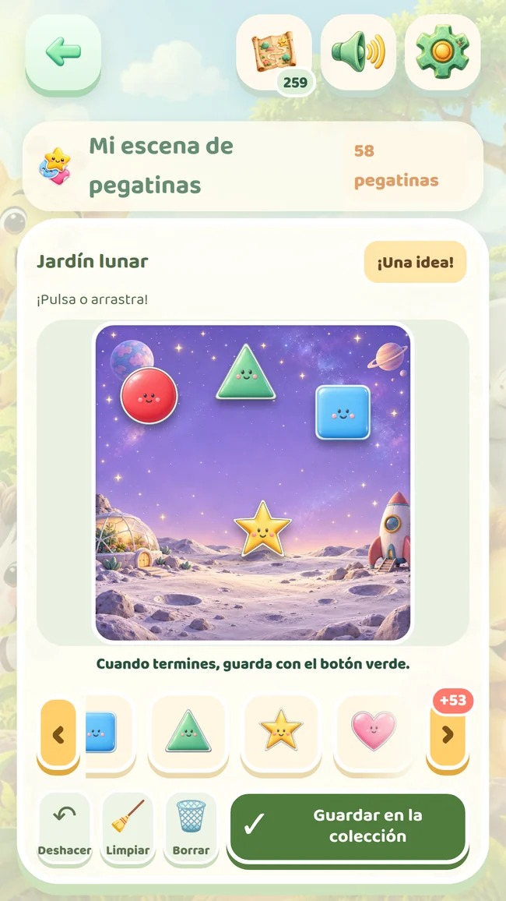
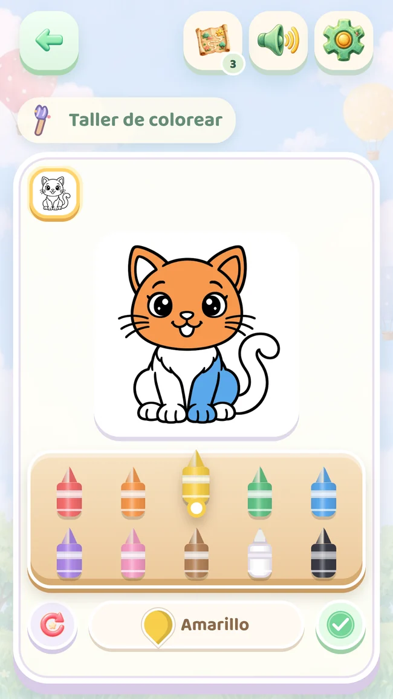
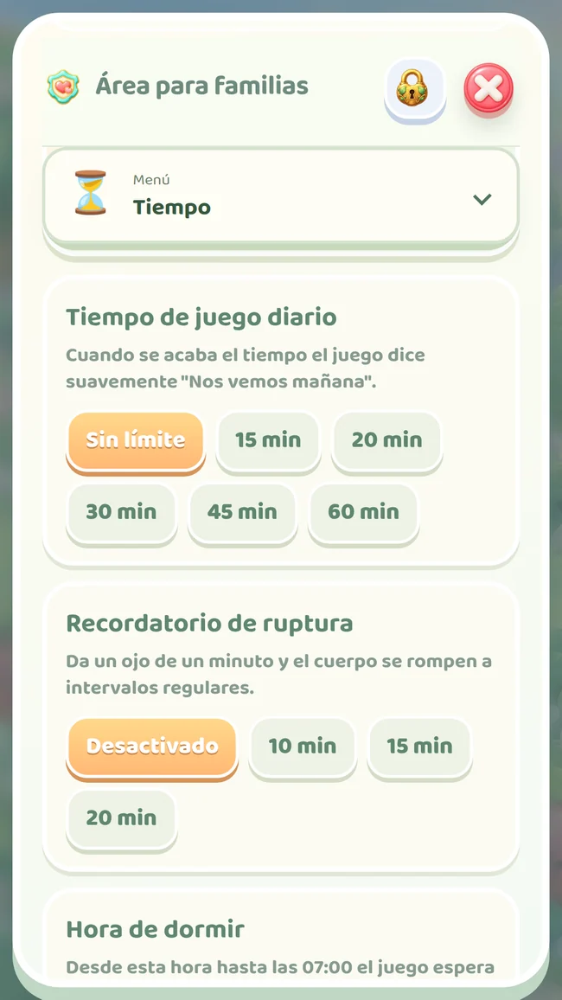

260 paradas, cinco mundos
De parejas a laberintos, con más opciones y secuencias más largas.
Versión completa · Lifetime
Más de sus juegos favoritos, nuevas escenas y un mapa para cada hermano. Una compra en Google Play da acceso a la colección completa.
Un pago. Sin suscripción.
Área para familias → Versión completa. Google Play muestra el precio actual.




Las 260 paradas incluyen las 50 gratuitas. En ambas versiones se abren en orden.
De parejas a laberintos, con más opciones y secuencias más largas.

Colores e imágenes para explorar con manos pequeñas.

Jardín lunar y valle de dinosaurios, con pegatinas ganadas para sus historias.

Mapas, progreso y creaciones separados en el mismo dispositivo. Cada hermano sigue desde su lugar.
| Contenido | Gratis | Versión completa |
|---|---|---|
| Paradas del mapa | 50 | 260 |
| Dibujos para colorear | 4 | 26 |
| Rompecabezas | 2 | 12 |
| Escenas creativas | 1 | 10 |
| Perfiles en el mismo dispositivo | 1 | Hasta 4 |
| Cinco idiomas y controles de tiempo | Incluido | Incluido |
Colección actual: 1.0.59. La versión completa incluye todo el contenido gratuito. Las 260 paradas incluyen las 50 gratuitas. En ambas versiones se abren en orden.

Juntos, a su ritmo
Una comprobación de adulto protege el área para familias. Organiza el tiempo, consulta lo que ha probado y encuentra ideas para compartir.
Tiempo diario de juego, recordatorios de descanso y hora de dormir.
Actividades completadas y tiempo de juego. No es una evaluación del desarrollo ni de sus capacidades.
Guarda o comparte creaciones y prepara hojas A4 para colorear e imprimir.
Imágenes conocidas, palabras nuevas
Elijan una imagen, escuchen su nombre y busquen el mismo objeto en casa. Los cinco idiomas están disponibles en ambas versiones.
Las voces en turco e inglés están incluidas y funcionan sin conexión. Español, portugués de Brasil e indonesio usan la voz del dispositivo; su disponibilidad y uso sin conexión dependen del paquete instalado.
Un pago. Sin suscripción.
Exploren 50 paradas gratuitas para conocer el juego en familia.
Consulta la colección completa y el precio de Google Play.
El acceso se activa al completarse el pago y verificarse la compra.
Sin suscripción ni renovación automática. Los pagos pendientes no dan acceso. La compra se puede restaurar; el progreso se guarda en el dispositivo.
Actualmente en prueba cerrada. El acceso a Google Play depende de la autorización de tu cuenta de prueba.
Se pueden repetir. Los dibujos y las medallas ganados se conservan. La colección completa se abre con una compra opcional de un solo pago desde el área para familias.
En el juego, abre el área para familias y luego Versión completa. Google Play muestra el precio actual y pide confirmar el pago. Esta web no cobra pagos. No hay suscripción.
Da acceso a la colección completa, pero las paradas se siguen abriendo al completarlas en orden. Comprar no salta el progreso.
El contenido de la aplicación Android funciona sin conexión. Las compras y su restauración necesitan internet. Las voces sin conexión de los otros tres idiomas dependen del paquete del dispositivo.
Restaura la compra desde el área para familias con la misma cuenta de Google Play. El progreso y las creaciones se guardan en el dispositivo; restaurar la compra no los traslada automáticamente.
No. Son premios del juego. El resumen muestra actividades completadas y tiempo de juego; no puntúa el desarrollo ni las capacidades.